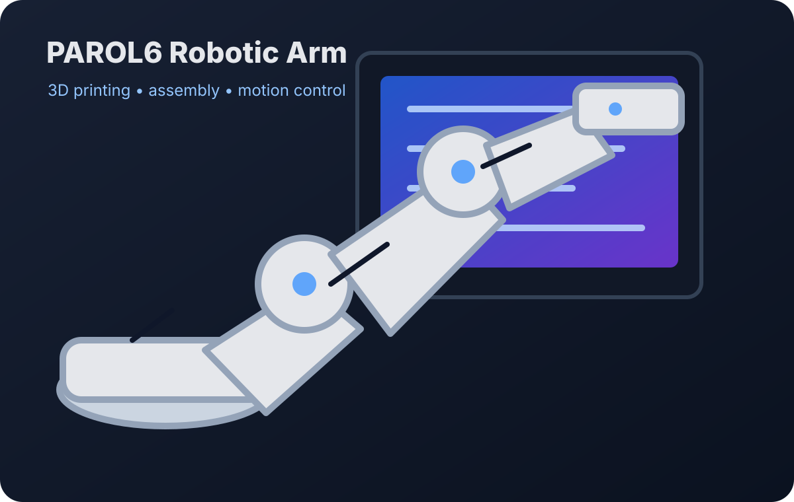

Robotics • Controls • Fabrication
PAROL6 Robotic Arm
Built and integrated a desktop six-axis robotic arm, including mechanical assembly, wiring, calibration, and controller workflow testing.
Focus: robotics, motion control, 3D printing, troubleshooting
Project details →